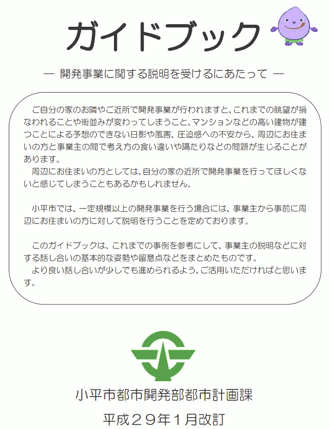

- 更新日
- 公開日
市民とともにまちづくりを行う条例を運用に耐えうるものに
～条例の不備と運用の不備が人々の福祉に負の影響を与えています～
主な質疑
目次
これは要約ですので、正確な質疑内容は会議録をご参照ください。読みやすさを考え、初回（初）と、再質問（再）の質疑を合わせています。また、簡略化のため、理事者側（市役所側）の答弁から敬語表現を省いている部分があります。実際は理事者側のすべての答弁が、市民に対する敬語表現でなされています。
今回質問する理由
前回に引き続いて
前回に引き続き、東京サレジオ学園の北側にある土地（同学園から事業主に売却された土地）の大規模開発について問う。関連して最後に請願第18号の回田町の開発について問う。
前者の開発においては、周辺住民や市からの再三の協議要請に事業主が応じてこなかったことを背景に、市としても初めて直面する課題がいくつも生じてきたと捉えている。
条例を改良し、運用面も整え、市民とともにまちづくりを行う思想を実のあるものに
私の認識では、問題は、条例に不備があることと、不備を運用でカバーしきれていないことにある。
周辺住民から具体的に問題が指摘されており、市も改善に着手し始めているものと思う。
今回のことを契機に、市の開発条例（小平市開発事業における手続及び基準等に関する条例）を運用に耐えるものに改良し、カバーする運用面も整え、開発条例第5条に明記された「市民とともにまちづくりを行う」という思想を実のあるものにしてほしい。
事業主は、安全で快適なまちづくりを推進するため、開発事業を行うに当たっては、その内容を都市計画マスタープランの方針に適合させ、自らも地域社会の一員としての社会的使命を自覚し、市民とともにまちづくりを行うものとする
サレジオ学園北側の土地開発はやっと自主的協議が始まった
サレジオ学園北側の土地開発については、やっと事業主のトヨタホームが話し合いに応じる状況になった。
第2回目の調整会は前半と後半に分け、前半の最後に時間を設けてもらい、周辺住民と事業主が話し合う時間があった。
その後、別の日程で事業主の自主的説明会が開かれ、やっと自主的協議ができる環境になってきた。私が見た限りでは今のところ理想的雰囲気。もっと早くから開かれていればとは思うが。
今後同様のことが起きないように
これは住民の方々のさまざまな働きかけがあった結果。市からの再三の催促もあった。しかし条例に不備があることは変わっておらず、今後も同様な事例が起きる可能性は十分ある。
今回よく分かったのは、条例に不備があると、市民の方々や開発事業者が混乱するだけでなく、その間に挟まれている市の職員にも大きな負担がかかるということ。
今後、同様の事態が起きないように条例や運用を改善していきましょうという提案の形での質問。
事業主の責務は周辺住民と自主的協議を行うことだと条例に明記しては
本年9月定例会の答弁で「市民とともにまちづくりを行う」の意味は「事業主と周辺住民が、相手の立場を尊重し、譲り合いの精神を持って自主的に協議を行うこと」等とあった。
しかしこれが条文にないため、事業主は自主的協議を行わないことが条例違反になるという認識がない。
条例にある事業主の責務について、前回答弁のとおり事業主と周辺住民が自主的に協議を行うこと等を明記すべきでは。
市の開発条例第5条の事業主の責務については、周辺住民からの意見や要望に対して自主的に協議を行うことや課題解決のために相互に建築協定などの検討をすることを想定しており、地域ごとのまちづくりの課題に即した対応を事業主に指導している。
また、条例第18条の市民への周知では、紛争が生じた場合は事業主と周辺住民が相互の立場を尊重し、譲り合いの精神をもって自主的に解決するよう努めなければならないこととしている。
事業主と周辺住民との間に紛争が生じた場合は、当該事業主及び周辺住民は、相互の立場を尊重し、互譲の精神をもって、自主的に解決するよう努めなければならない。
市としては、開発事業の手続きの際には、事業主に対して条例の趣旨を指導しており、現在のところ事業主の自主的な協議を条例に明記することは考えてないが、地域住民のまちづくりへの意識の変化などもあることから、今後の運用における取扱いを含め、研究していく。
なぜ今のところ明記を考えていないのか
なぜ今のところ明記を考えていないのか。
本来、周辺住民の揉めごとが起こらずスムーズに進められることが一番よい。
条例に自主的な説明会を求めることを明記するのは不要な負担を強いることになるのではと考えている。
自主的な協議ということを明記しても、その方法を選ぶ権利は事業主の方にあるので、説明会の指定という強い指導をすることはなかなかと難しい。
市としては運用の中で行政指導として指導していきたい。
その点はのちほど指摘する。
事業主に対して条例の主旨を指導しているのはいつの時点か
市長答弁で、開発事業の手続きの際は事業主に対して条例の趣旨を指導しているとあったが、これはいつの時点で指導しているか。
一般的な開発では、事前相談の段階で伝えている。
今回のサレジオ学園北側の開発は大規模開発事業なので、その前段の土地利用構想に関わるところの手続きの中でも伝えている。
自主的協議をしない場合は条例違反だと伝えているか
指導の内容として「自主的な協議をしない場合は、条例第5条の事業主の責務に違反する」と伝えているか。
条例違反になるということではなく、周辺住民から声があった場合には必ず説明をして対応してほしいという旨を口頭で伝えている。
事業主は条例違反かどうかをとても気にしていることが今回分かった。
条例違反にならないなら特に問題はないというスタンスであることも、調整会や自主的説明会の会議録等を見るとよく分かる。
つまり、事業主に対しては、条例違反になると伝えることがすごく重要。
事業主が土地を買った後に、市が事業主に対して自主的な協議に応じるよう指導するならば、事業主は土地を買ってから初めてそれを知らされることになる。
条例には「市民とともにまちづくりを行ってください」と書いてあるが、「自主的な協議をしてください」とは書いてない。
これは事業主にとってはフェアではない。土地を買った後に、後付けでコストがかかるようなことをさせられている。
場合によっては訴訟が起こされ、市が負けるような事態になる可能性もある。
事業主が土地を購入するより前に、自主的協議が必要であると分かるようにすべきでは
そのため、条例に明記するなどして、事業主が土地を買う前の段階で、「小平市で大規模開発をする場合は自主的な協議をする必要がある」と分かるようにしなければならないと思うがどうか。
土地を買う前は、相互の売買に対してあまり不利益にならないよう注意が必要なので、伝える方法は非常に難しい。
明記というところは行政指導の範囲になってくるので、そこを確実に出すところは、なかなか条例上難しい。
今までどおりのやり方で、運用の中での方法で、何とか試みさせてもらいたい。
事業主の負担になるという点はまたのちほど指摘する。
問題が明確であり、職員に心理的負担が係る状況でなぜすぐに対応しないのか
今後の運用における取扱いを含め研究していくという市長答弁だったが、市の言う研究はスピーディーには進まない。
今回うまくいかなかったことが明らかになっており、周辺住民の方々から具体的な指摘があり、問題点も明確になっているのに、なぜすぐに対応していかないのか。
職員にもかなり心理的負担がかかっている状況。市長の部下がそういう状況になっているが、なぜすぐに対応してもらえないのか。
今回、事業主がなかなか自主的協議に応じなかったところが最大の問題だったと思う。
自主的協議は、基本的には双方を思いながらやっていかなければいけない。たしかに条例にはその趣旨はあるが、自主的協議自体がお願いをしてやっていただくことになる。
市の方も、行政指導を行う過程では、あくまで相手の任意の協力によってのみ実現されるということが行政手続法にも明記されている。書きぶりは非常に難しい。
行政指導にあっては、行政指導に携わる者は、いやしくも当該行政機関の任務又は所掌事務の範囲を逸脱してはならないこと及び行政指導の内容があくまでも相手方の任意の協力によってのみ実現されるものであることに留意しなければならない。
しかし考えてみると、開発条例には、説明会や調整会を開くことなど、事業主に対しての強制と思えるような手続きが書かれています。とすれば、自主的な協議についても同様にすればよいだけなのではないでしょうか。
条例を変えるのが難しいならまずガイドブックの扱いと内容を変えては
条例を変えることがどうしても難しいなら、最悪というか、消極的な手段として次のような対応もある。
市には『開発事業に関する説明を受けるにあたって』というガイドブックがあり、自主的な協議が必要で、それが基本になるといったことが書かれている。

ただしこれは市民向けと書かれており、タイトルも「説明を受けるにあたって」だ。つまり事業主がこれを積極的に読むことはないと思われる。
また「自主的な協議を行うことが事業主の責務」といったことは書かれていない。
条例を変えることが難しいなら、このガイドブックを次のようにしてはどうか。
- 市民向けではなく「事業者と市民向け」として市ホームページに載せる
- 開発の手引きが掲載されているページと同じところに、関連リンクとしてではなく同じコンテンツとして並列の扱いで置く
- ガイドブックの中に「条例にある事業主の責務とは自主的な協議を行うことである」と明記する
これは最後の手段であり、事業主に対してフェアではないことに変わりはないが。どうか。
たしかに事業主には今配布していない。
周辺住民から声があった場合は必ず説明してほしいと口頭で伝えていることもあるので、このガイドブックを事業主にも配布していきたい。
また、ホームページの掲載についても、箇所を工夫するなど、事業主の目に留まるよう検討していきたい。
ガイドブック、手引きについては引き続き、分かりやすく、誤解の生じない記載方法を検討していきたい。
ガイドブックの中に「条例にある事業主の責務は自主的な協議を行うこと」や「相互に建築協定などの検討をすること（前回市長答弁にあったこと）」も明記しては。
表記の仕方もあるので、具体的なことについては、もう少し検討したい。
ガイドブックに書くだけなら、気にしている行政手続法のことも問題ないのでは。
現在の状況を整理するがその認識で正しいか
もう一度今の状況を整理する。
周辺住民の立場で条例を読めば、「事業主が市民とともにまちづくりを行う」と書いてあるので、「計画が固まる前から事業主と自主的な話し合いを重ね、お互いに共通認識のようなものが形成できる」と理解（期待）するはず。
一方、事業主の立場で条例を読めば、「手続きにある説明会や調整会を行えば、市民とともにまちづくりを行ったことになる」と理解するはず。これは自然の成り行き。
いくら市の職員が事業主に対して自主的な協議に応じてくださいと説明しても、事業主としては、それは条例に書いてないでしょうと。なぜ条例にないことを強要してくれるのかという意識でいると思う。
また、住民と事業主の間に挟まれた市の担当職員は疲弊する。条例の記載があやふやで、住民側の主張も事業主側の主張も間違いがない中で、誠心誠意尽くそうと頑張ってもどちらからも責められる状況になり疲弊してしまう。
そういった状況にあるという認識でよいか。
その認識で大方そういう形で我々も捉えている。
ただ、開発事業については、基本的には東京都が許可を出す。その間の中継と言うか、市は同意を出していく。そこはあくまでも行政指導のレベルで、かなりの限界がある。
住民の方にとってみれば、行政指導に強い権限があると思われる。そのあたりはきちんと説明をしていきたい。行政指導の難しさを、もう少し住民の自分の方に理解していただくような説明の仕方や書き込みについては工夫していきたい。
自主的協議を行うタイミングを条例に明記してはどうか
自主的な協議を行うタイミングは特に定めがないため、初めて協議に応じるのが工事着工段階であっても事業主の責務を果たすことになってしまう。この抜け穴を塞ぐため、たとえば「周辺住民から協議の要求があった場合、できる限り速やかに、遅くとも3週間以内に」など、具体的に協議を行うタイミングについて条例に明記するのはどうか。
事業主が周辺住民から協議の要求を受けた場合、速やかに対応できるとは限らず、開発事業の事業主に対する過度な負担を課す恐れもあることから、条例への明記は慎重に取り扱う必要があると考えている。
事業主に「自主的な協議に応じないと条例違反だ」ということを土地購入より前に伝わるようにすることは大前提で、その次に必要なのは、自主的な協議をいつの段階で行うかということ。
開示請求で入手した開発条例の逐条解説に重要な記載がある。
開発条例9条（土地利用構想の公開等）の土地利用構想の縦覧や説明会について書いてあるところ。
開発事業を実施する場合、事業主から周辺住民に対して行われる事業計画の説明が、一般的には変更不可の状態（計画を固めて用地取得するため。）にて行われることが多く、市や住民からの要望等があっても計画変更が困難であり、このため住民と軋轢が生じて紛争となる事例が増大している。よってできるだけ早い時期（構想の段階で計画変更が可能な時期まで。）に、周辺住民に対して説明会を開催し、計画内容を公表するとともに、周辺住民等と調整協議を行うことにより紛争の発生を減少させることを目的に、当該規定を設けている。
小平市開発事業における手続及び基準等に関する条例小平市開発事業における手続及び基準等に関する条例施行規則 逐条解説
わかりにくいが、つまり事業主はほぼ計画を固めた状態で用地を買っているので、できるだけ早い時期に、説明会だけではなく周辺住民等との調整協議を行うことによって紛争の発生を減少させる必要があると書いてある。
自主的協議を行う時期はできるだけ早い時期にと逐条解説に書いてあるという認識でよいか
つまり、のんびりしていたら計画が固まっていってしまう。だから自主的な協議を行う時期は、できるだけ早い時期でなければならないと逐条解説に書いてあると思うが、そういった認識で正しいか。
早いうちにそのあたりの趣旨を理解していただく趣旨はおっしゃるとおり。
ただ、基本的には土地利用構想の段階からその後の窓口協議に入っていく。その段階でも基本的には説明の機会や変更は可能。そういうふうに全体を見た中での書きぶりになっている。
なるべく早い段階で協議をした方が事業主にとっても負担が少ないのでは
進んだ段階でも変更は可能だけれども、なるべく早い段階で協議に応じてもらった方が、事業主にとっても周辺住民にとってもよいということ。
先ほどの市長答弁で「事業主に対する過度な負担になる恐れがある」という話があったが、自主的な協議をなるべく早い段階で行わなければならないと理解していた方が、事業主にとっても負担が少ないと思う。
今回のように、後の段階になってから自主的な協議を行うとすると、そこで出てきた意見を取り入れて、修正案、修正案とやっていく。時間もコストも余計にかかる。そういった考え方もあるか。
コストについては事業者の考え方などで場合によってはかかってくる可能性もある。市としては、なるべく早い段階での自主的な協議を促している。
ということは、事業主に過度な負担を課す恐れということも、状況に応じてそうじゃないかもしれない。
事業主がどのタイミングで住民と話し合いをしようと、住民の側から計画を変更させるだけの強制力があるわけではない。
つまり事業主はかなり強い立場なので、早めに話し合いをしてくださいと言っても、事業主にとっては不利益は何もないのではないか。
むしろ話し合いが後になればなるほど、住民の不信が募り、軋轢が生じ易くなったり、紛争も起きやすくなるのではないか。
自主的協議のタイミングを後にすることでなし崩し的に事業を完遂させる意図があるのでは
ひとつ、過度な負担にならないようにといつも言うが、そう言っている背景に関して誤解があったら正しておかなければならないと思い質問する。
事業主にとって、協議のタイミングをなるべく後にずらすことで、なし崩し的に開発を進められるようにする。それが事業主の利益になるという意識があるのではないか、市にもそういった意識があるのではないかと疑う意見もあるが、どうか。
なし崩し的にして事業を完遂させるというような考えは市にはないし、事業者もそういう考えはないと市は考えている。
ただ、自主的な協議と説明で、人員や会場の手配だとか、時期がなかなか合わないとか、そういう事情も事業主にはあるので、それを踏まえてある程度場合によっては少し後ろになってしまうこともあるのではと考えている。
そうすると、会場の設営や時間を合わせなければいけないといったところで、時期が後ろになるから、早めに早めにと言うと事業主に過度な負担になるといった話か。
そういったところがクリアされるような時間軸の中で最大限早められるなら早めてもらいたい、そういううまい表現の仕方はあると思う。今パッと思いつかないが。
そういったところを検討し、考えていただきたい。
調整会中の事業主による新案の提示をどう考えているか
今回、土地利用構想に係る手続きの中で事業主が新しい図面を2度提示した。どちらも説明会がなく、うち1回は土地利用構想に係る調整会の中で提示されるなどし、混乱を招く事態となったことについて、市の見解を問う。
上水・南町4丁目の開発事業では、土地利用構想に係る手続において、縦覧などを経て見解書の提出と調整会が行われている。
見解書の提出の際と調整会の際に、事業主から事業計画を説明する補足資料として提示したい旨の要望があり、これを認めたもの。
しかしながら結果として事前説明が不十分なため、混乱を招いたと認識している。
今後は、新しい図面等の資料を提示する際には、周辺住民に対して十分に説明を行うよう、事業主に指導していく。
周辺住民は、調整会では意見書の話しかしてはならないという結構厳しいルールを守ってきた。そういう中で、事業主から調整会の中で出してよい資料ではなかった。
なぜなら、事業主が調整会の中で修正案を出せるようにしてしまうと、現行のルールでは2回しかない調整会を、うまい出し方をすることで恣意的に無駄にすることもできてしまう。
ただ、調整会が2回までというルールがあるのは「自主的協議が行えていることは普通である」という前提に立っての話。今回は普通ではない状況での運用だったというところもあると思うが。
市から事業主に土地利用構想の変更届提出を促してはどうか
今回、調整会の中で出てきた修正案は、土地利用構想変更の届け出が必要になるような修正案だと私も思う。
先日の事業主による周辺住民との自主的な説明会の場でも、事業主も変更の届出を出すかどうかは会社に持ち帰って検討するという話だった。
逐条解説を読むと、土地利用構想の変更の届出が必要になるのは「再度周辺住民説明会を開催しなくてはならないような著しい変更である場合」と書いてある。
今回のように、
- 通行地役権が設定された通路が新設された
- 地盤面の高さが大きく変わった
- 周辺住民のプライバシー侵害につながる懸念や防犯上の懸念が新しく発生した
- クルドサックが設けられて車の運行状況が変わった
などあれば、再度周辺住民の説明会が必要になる事例と思う。
また、事業主から変更届出が出された時、市長が事業主に対して「変更届が出されたので、改めて手続きの最初の方からやってください」と求めることもできるようになっている。
この、市長が事業主に対して最初の方からやるように求められる条件としては、逐条解説に「主に周辺住民への影響が大きいもの、たとえば公園の位置とか道路の配置変更などで、周辺住民への影響が大きいものなどの場合」と書いてある。
クルドサックを設けて通行地役権を設定した通路を設けるといったことは、道路の配置変更などに当たるのではと思う。
逐条解説には続いて「周辺住民との協議による変更で流動的であるケースについては届出不要として運用している」と書いてある。
まさに自主的な協議が行われていることが前提になっている。今回のように調整会の場で変更案が出てくるようなケースには当たらないと思う。
この解釈で職員もかなり悩んだのではないか。
逐条解説の最後の方に「（事業主が計画変更する場合は、一部の計画改善により、その他の部分が改悪にならないよう工夫している。これまでの運用では改善は変更届の対象としてない）」と書いてある。
多分、職員がこれまで変更届を出す必要はない、そういう事態ではないと言ってきたのは、この最後の「改善は変更届の対象としてない」というところを論拠としているのかと思う。
でも考えてみると、改善は変更届の対象とならないというのはおかしな話。一部の人にとっては改善かもしれないが、それ以外の多くの人にとっては愛悪になっている変更だってある。
さらに、今の状況では、調整会に出ている一部の住民だけを対象に変更プランが示されている。それ以外の人たちは新しいプランをまったく知らないまま開発が進んでしまう側面もある。
市からも、こういったことを背景に、事業主に対して土地利用構想の変更届を出してはどうかと提案をしてみてはどうか。
土地利用構想の変更届は、事業主の都合による変更があった場合に提出を求めるものであり、今回の事業のように周辺住民の意見を受けて変更したものは対象外としている。
事業主都合で図面を大幅に変更した場合というのは、
- 公園の位置が変わった
- 道路の配置というのは、本数が増えたりのこと
- 計画内容が異なってくる、たとえばマンション計画から宅地分譲に変わる
そういう大きな変更があった場合などを考えている。
事業主から変更の届け出があれば、市は受理するが、市の方から変更届になるので出してというところまではなかなか難しい。
土地利用構想の変更届を出す条件は明文化されているか
今の答弁にあった変更届を出すときの条件は明文化されているか。逐条解説には書いてなかったが。
逐条解説には、土地利用構造の変更ということで、著しい変更である場合は届出が必要ということ、周辺住民との協議での変更で流動的であるケースについては届出不要として運用していると。
あと、その変更の程度が著しいということで、公園の位置だとか道路の配置変更などで周辺住民の大きいものなどを指す、という形で明文化している。
今回の場合は、道路の中にツリーサークル、スピードを抑制するようなクルドサック的なものをですね、道路のところにつけているので、道路の配置が変更したというところまではいかないのかなという認識を持っている。
開発条例の逐条解説を抜粋
逐条解説には具体的には次のように書かれており、村田開発部長の答弁とは違う解釈もできると思います。市民とともにまちづくりという考え方に従えば、市から事業主に対して変更届けの提出を検討してもらうくらいはやってもよいのではないでしょうか。
- 「土地利用構想に変更」とは、再度周辺住民説明会を開催しなくてはならない様な、著しい変更である場合は届出が必要。周辺住民との協議による変更で、流動的であるケースについては、
説明会が必要でない限り届出不要として運用している。
また、市長の助言、周辺住民の要望を反映したものは、事前相談書の中で図面に反映してもらう。
なお、事前相談書の提出に至ったものは、市長の助言、周辺住民とのやりとりを経過した内容であるため、土地利用構想の変更届を提出する必要はない。- 「変更の程度が著しい」とは、主に周辺住民への影響が大きいもの（公園の位置、道路の配置変更などで周辺住民への影響が大きいものなど）を指す。 なお、周辺住民の要望を反映させる
改善させる計画変更の場合は、事業主の負担が増えることが多いためで、事業者が変更に応じないことも考えられるため、運用に注意が必要である。計画変更により、他の周辺住民へ負担が生じない場合は、そもそも届出不要として運用すべきである。- 「第8条から第11条までの規定による手続」とは、大規模開発事業が既にトラブルになっている場合、2回の調整会を終えているものと想定される。調整会は、相互の意見・見解の内容を確認、整理するものであり、この段階では相互にある程度理解されているものと考えられるため、調整会の開催は必要ないものと考えている。
過度な負担は、事業主が計画変更に応じなくさせる可能性もある。これまでの事例においても、その後の協議は任意の協議となっていく。
（事業主が計画変更する場合は、一部の計画改善により、その他の部分が改悪にならない様工夫している。これまでの運用では、改善は変更届の対象としていない。）小平市開発事業における手続及び基準等に関する条例小平市開発事業における手続及び基準等に関する条例施行規則 逐条解説 （土地利用構想の変更の届出）に関する項
公園の位置や道路の変更配置などで周辺住民への影響が大きいものというところもわかりにくいが、通行地役権を設置した通路の設置は、道路の配置変更に当たると考えてもよいのではないか。
事業主が土地利用構想の変更届を出すに至った場合、市はさかのぼって手続きを求めるか
もし事業主が土地利用構想の変更届を出すことになったら、市長はその事業主に対し、さかのぼって手続きを行うよう求めるか。たとえば、新プランの縦覧や意見書の提出などから始めるよう求めるか。
事業主から土地利用構想の変更届が出てくれば、再審議を検討することになる。
変更届出に関係なく、土地利用審議会を再度開く必要があるのでは
変更届を出す出さないと関係なく、ここまでプランが変わると、土地利用審議会を再度開く必要があるのではないか。
これから土地利用審議会の答申案が出る段階だが、それは変更前の計画に対する答申。新プランに対する答申をもらう必要があると思うがどうか。
事業主から土地利用構想の変更届が出てくれば、再審議を検討し、再度土地利用審議会を開くかどうか検討となる。
ただ、土地利用目的に変更がなく、住民との協議による変更内容だけであれば、再審議はしないということでの運用をしている。
土地利用構想の届出が出てきた時に検討という形と考えている。
私が図面を見ても、かなり大きく変わっている。
通行地役権を設定して、周遊するような通路が設定されると、周辺住民にとってかなり影響が大きいと思う。それについてはやはり、変更届が出されなくても土地利用審議会を開かないと。
小平市の国民健康保険運営協議会はまったく意味をなさなくなっているという指摘があったように、土地利用審議会も、一部で意味のない答申を出してしまうことになる。考えていただきたい。
市長が認めたときと書かず、東京都の審査基準によると書いてはどうか
小平市開発事業における手続及び基準等に関する条例施行規則の別表第6に「道路の両端が他の道路に接続すること。ただし、市長が周囲の状況により避難及び通行の安全上支障がないと認めたときは、袋路状道路とすることができる。」とある。前回、市長が認めたときというのは、東京都の審査基準を満たすときという旨の答弁だったが、そのことは条例のどこにも記載がない。
市の開発事業の手引きに「隅切り、道路幅員及び転回広場等は、東京都の基準及び市との協議による。」と注釈があるが、これをもって「市長が認めるのは、東京都の審査基準を満たす場合」と解釈するのは無理がある。市長の裁量権逸脱を指摘する声もある。市長が認めたときと書くよりも、東京都の審査基準によると書いてはどうか。
開発事業において最終的に合意するのは市長であることから、市長が認めたときとの記述で整理をしている。
なお審査基準等の実務上の内容は開発事業の手続に記載しており、内容は東京都の審査基準を基本としている。
別表第6の「市長が認めたとき」というのは、結局東京都の審査基準によるといういこと。
でも東京都の審査基準を見てもわからないことが多い。電話をして問い合わせをして、しばらく待って、深掘りしていくとやっと分かる。
驚くことに、都市計画法と建築基準法が元になっている話で、要は6メートルの幅員が道路にあれば、袋路状道路であっても、転回広場がなくても、法律に違反していることはならない。
でもそれだと袋路状道路ばかりで転回広場もないまちになってしまう。言ってみれば建前として袋路状道路はダメですと。もしどうしても袋路状になる場合は、転回広場を設けなくてはならないと、建前として言っている状況だと私は理解した。
ただ一方で、先日、まちづくりアドバイザーの弁護士相談会でいらした弁護士の方によると、条例の中に「長い袋路状道路はダメ。そういうものを設けたら開発の許可を出さない」と書いてあっても、それは法的には問題ない、市長の裁量権逸脱にならないということだった。
法律解釈はさまざまあると思うので、今聞いても答弁は難しいと思うのでまた別途確認するが、今の時点でコメントがあれば。
・・・。
この辺は難しいことなので、また聞こうと思う。
もし、市の条例で、「長い袋路状道路はダメ、開発の許可を出さない」と言っても法的に問題ないのなら、そう言ってしまえばよい。
そんなことをしたら土地が売れなくなる、土地を買う事業者がいなくなると。土地の価格や流動性誘導性が大幅に下がっちゃうと。
そういう懸念がひとつあると思うが、ひとつの考えとしては、それでよいと考えることもできる。
つまり、そういう縛りがあれば、土地を売ろうとする人にとっては、袋路状道路を設けなくて済むような土地の形で売ろうとする。
もしくは、土地を買おうとしている開発事業者は、袋路状道路を設けなくて済むような土地利用の仕方を考える。
もしくは、土地を買おうとしている開発事業者は、土地を売ろうとする人にアドバイスする。こういう形なら、うちはこれくらいの金額で買えると。
つまり、自主的協議が必要ということに加えて、袋路状路はダメだということを条例に明記すれば、どういうことが起きるかというと、小平市の土地を購入する開発事業者は、住民との話し合いをしなければいけないと分かっていて、袋路状路を設けてはいらないと分かっていて、それでも利益をきちんと出せる開発事業者だけが土地の購入に参加できることになる。
一時的に土地の売買価格が安くなったり、流動性も下がるかもしれないが、長い目で見れば、そういう有料な事業者や、市民とともにまちづくりを行うことによって利益を上げられる事業者が増えてくることで、よいまちがつくられ、多少高くついたとしても住みたいという住民が集まり、土地の売買価格も上がり、同じような機会を狙う事業者が集まったら流動性も上がってくるのかなと思う。
そういう可能性もひとつ考えられると思うがどうか。
市としては袋路状道路が駄目とは思っていない。基本的には袋路状道路でも条件を整えれば合法な扱いでできる。
小平市の土地柄、なかなか短冊状の土地ということで、袋路状ができやすいというか、そういう土地柄なので、これを袋路状が駄目と言うと、土地の売買に影響してくると考えている。
制約がかなりきつくなると考えている。そこはなかなか書きぶりをそのように書くこと自体はなかなかできないと考えている。
このあたりは本当にシミュレーションをしてみないと分からない、シミュレーションが必要なところと思う。
本年10月に行われた土地利用構想に係る調整会第1回目で傍聴人数が当初制限されていたため混乱があった。小平市審議会等の会議の公開に関する事務取扱要領（第3条）には「傍聴人の定員は、原則として10人以内とする。ただし、会議の議長が特に認める場合は、この限りでない。」とある。しかし当初、議長（市）は超過人数を認めない状況だった。要領を「傍聴人の定員は、場所、日時、当日の状況に応じて、可能な限り配慮する」とすればよいのではないか。
小平市審議会等の会議の公開に関する事務取扱い要領では、庁舎内の会議室を前提とし、その広さや定員から、傍聴人の定員を10人以内と定めている。
また、傍聴人に会議資料等を配布する場合には、事前に準備している配布部数を超過する傍聴人を当日、急遽受け入れることは難しいという事情もある。
現行の規定でも、庁舎以外の施設を利用して開催する場合や、事前に多くの傍聴者が見込まれる場合など、会議の状況に即した議長の柔軟な判断・配慮を制限するものではなく、当該要領を改正するには及ばないと考えている。
議長の柔軟な判断でしていただけるという言葉をいただいたので、よいと思う。ありがとうございます。
今回、まちづくりは土地が売却される前から始まっていることが分かった。この観点を施策に取り入れてはどうか。
条例においては、事業主の責務として開発事業の内容を都市計画マスタープランの方針に適合させることを定めており、内容は土地取引行為を計画している段階の事業主も認識しているものと考えている。
土地をどういう形で売れば、市の条例に合致し、周辺住民が快適に暮らせる開発にできるのかといったことを、土地を売る前から周辺住民と話し合って考えることも必要と思い、たとえばそういうことができるアドバイザーを派遣したらどうかと、（担当課とのやり取りの中で）提案した。
それに対して、土地の売買は、事前にその土地が売られることが知られてしまうと、いたずらに利益を求めるような事業者が出てきて、たとばその周辺を購入する業者が現れたりするので、相当慎重に進めなければならないといった話を聞いた。
たしかにそうだなと思った。しかしよく考えてみると、条例に「袋路状道路はダメです」ときちんと書いてあって、開発許可は出さないということが確定しているなら、土地を売る際も袋路状道路にならない売り方を考えるわけで、まず条例を変更すれば、そういうよい影響もあるのかなとも思う。
条例の不備を運用でカバーする際、最後の砦は市長だ。たとえば今回、市長が直接事業主に対し協議に応じるよう促すこともできたはずだ。市長の見解は。
市としては事業主に対し、周辺住民と話し合いの場を自主的に持ち協議を行うよう行政指導をしていることから、私が直接指導を行う必要はないものと考えている。
今回、とある事情がなければ、行政指導を続けていても、事業主は自主的協議に応じてくれなかったと私は思っている。
そういったとき、市長は会社で言えば社長。社長が出てきて一言、自主的協議を行ってくださいとお願いするだけで、ずいぶん状況が変わる。
そういったことをしていただきたい。
回田町の開発でも、市民とともにまちづくりという点がひとつの焦点だ。子どもたちの安全が脅かされている状況の打開に向け、開発条例では対応し切れない部分で、運用でのカバーという観点から、市長は、関係者と協議することは行ってきたか。協議していない場合、他に何らかの行動を取ってきたか。
市としては、事業主と法令や基準に沿った整備を行う協議をするとともに、必要に応じて条例では対応しきれないフットパスや避難通路など公共施設等の設置についても行政指導をしていることから、私が直接協議等を行う必要はないものと考えている。
いつも思うが、市長はできることを最大限にしているのかが疑問。
マスクと黙食の請願、今年3月に前回一致で採択された請願第12号「市立小中学生の健全な成長発達のために教育活動における制限の緩和を求めることについて」が出されたとき、名前を出してよいとおっしゃったので名前を出すが、請願者の小平市民、小野真帆さんの話をちょっとさせてもらう。
小平市だけではなく、マスクや黙食が、国が求めているよりも過剰な制限を子どもたちに課しているという状況がなかなか全国的にも解消しないから、小野さんが、全国の同じような問題意識を持っているお母さん方とつながって、全国規模で子どもたちの声をアンケートで集めて、まとめてそれを全国の自治体に送付して改善を要望したり。
つい先日は伊藤議員と一緒に文部科学省の副大臣のところに要望書を出しに行った。そこで時間を取ってお話もされた。そうしたら、ほどなく文科省から黙食は必ずしも必要ではないといった通知が出た。
さらに、コミュニケーション能力にも影響が出るという話がありますといったことも通知の中に書いてある。
人事を尽くして天命を待つということわざがある。私も、この請願の活動のとき、なるべく人事を尽くせるように頑張って皆さんと一緒にできる限り活動してきた。
それが最終的に議会で全会一で採択していただくに至ったと思っている。
市長は、回田町の開発のところで、こういった人事を尽くすようなことはしてきたか。
関係者と土地の関係で難しいところがあるという話を聞いているが、誠意を持って市長が関係者のところにお願いしに行ったら、もしかすると状況が打開されるかもしれない。
市長に対してあまりよいイメージを持っていない関係者かもしれないが、そういった時は、関係者とつながりの深い方を介して話されてもよい。
そういった、子どもたちの交通の安全、命に関わるようなことについて、市長は人事を尽くすことをこういった開発事業においてしてきたか。
回田町の開発については、周辺住民から市長へ直接連絡もあり、状況等をきちんと確認するようにということで我々も指示を受けている。
その指示を受け、請願18号も受け、市の中で関係する5課を、課長筆頭にいろいろなアイデア出しだとかを行って、いろいろ調整をさせていただいてございます。
市長には適宜、その状況報告も担当職員が説明しているが、内容は市長の意向を受けての説明なので、基本的には同じ意向で行われていると考えている。
市長が実際に顔と顔を合わせて、誠心誠意お願いすれば結構状況が変わってくると思うところもある。
まとめると、現状の条例は、言ってしまえばおためごかしの条例。
市民とともにまちづくりとか、袋路状道路は認めないといったことが書いてある。
市民から見ればそれはすばらしい条例だなと思うが、実際はそうではない。事業主は自主的協議になかなか応じてくれないし、袋路状道路もつくられてしまう。
結局市民を期待させてそれを裏切る内容になっていると思う。
さらに事業主にとっては後出しルールになっている。自主的協議をしなければならないことや、いつの時点でしなければならないといったことは、条例のどこを読んでも書いていない。
手続きにある説明会や調整会だけやっていれば開発が進んでいくはずと思って土地を買ったのに、後から自主的協議を早くしてくれとしつこく言われてしまう。
これはフェアではないと感じるはず。
さらに市の職員にとっては、市民から責められ、事業主もまったく対応してくれず、間に挟まれて条例のおためごかしに苦しめられている状況。
これはすぐにでも改善が必要。市長は住民が苦しんでいることについてだけではなく、部下が苦しんでいる状況を見て、何も行動を起こさない、人事を尽くさないというのは本当に冷たいと思う。
条例をすぐに改善できなくてもよいが、自分が出て行って運用でカバーすればよい。そういったこともしてくれないなら本当に残念なこと。ぜひ改善をしていただきたい。
以上